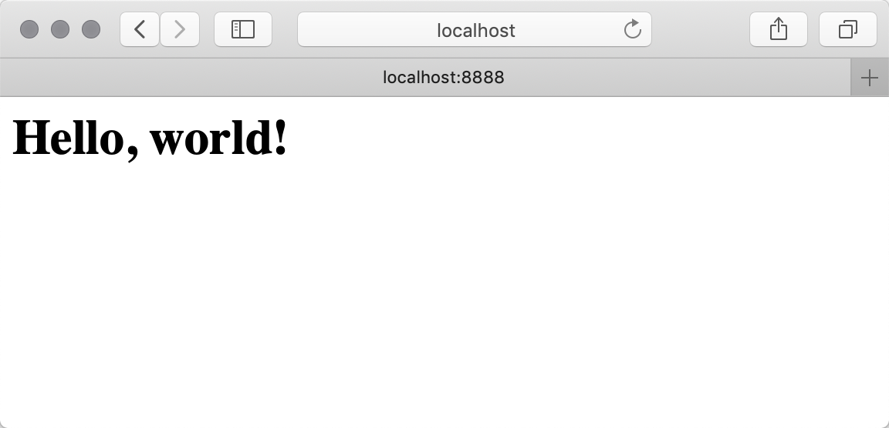

62.Tornado入门
Tornado入门
Tornado概述
Python的Web框架种类繁多（比Python语言的关键字还要多），但在众多优秀的Web框架中，Tornado框架最适合用来开发需要处理长连接和应对高并发的Web应用。Tornado框架在设计之初就考虑到性能问题，通过对非阻塞I/O和epoll（Linux 2.5.44内核引入的一种多路I/O复用方式，旨在实现高性能网络服务，在BSD和macOS中是kqueue）的运用，Tornado可以处理大量的并发连接，更轻松的应对C10K（万级并发）问题，是非常理想的实时通信Web框架。
扩展：基于线程的Web服务器产品（如：Apache）会维护一个线程池来处理用户请求，当用户请求到达时就为该请求分配一个线程，如果线程池中没有空闲线程了，那么可以通过创建新的线程来应付新的请求，但前提是系统尚有空闲的内存空间，显然这种方式很容易将服务器的空闲内存耗尽（大多数Linux发行版本中，默认的线程栈大小为8M）。想象一下，如果我们要开发一个社交类应用，这类应用中，通常需要显示实时更新的消息、对象状态的变化和各种类型的通知，那也就意味着客户端需要保持请求连接来接收服务器的各种响应，在这种情况下，服务器上的工作线程很容易被耗尽，这也就意味着新的请求很有可能无法得到响应。
Tornado框架源于FriendFeed网站，在FriendFeed网站被Facebook收购之后得以开源，正式发布的日期是2009年9月10日。Tornado能让你能够快速开发高速的Web应用，如果你想编写一个可扩展的社交应用、实时分析引擎，或RESTful API，那么Tornado框架就是很好的选择。Tornado其实不仅仅是一个Web开发的框架，它还是一个高性能的事件驱动网络访问引擎，内置了高性能的HTTP服务器和客户端（支持同步和异步请求），同时还对WebSocket提供了完美的支持。
了解和学习Tornado最好的资料就是它的官方文档，在tornadoweb.org上面有很多不错的例子，你也可以在Github上找到Tornado的源代码和历史版本。
5分钟上手Tornado
- 创建并激活虚拟环境。
| mkdir hello-tornado
cd hello-tornado
python3 -m venv venv
source venv/bin/activate
|
- 安装Tornado。
- 编写Web应用。
| """
example01.py
"""
import tornado.ioloop
import tornado.web
class MainHandler(tornado.web.RequestHandler):
def get(self):
self.write('<h1>Hello, world!</h1>')
def main():
app = tornado.web.Application(handlers=[(r'/', MainHandler), ])
app.listen(8888)
tornado.ioloop.IOLoop.current().start()
if __name__ == '__main__':
main()
|
- 运行并访问应用。

在上面的例子中，代码example01.py通过定义一个继承自RequestHandler的类（MainHandler）来处理用户请求，当请求到达时，Tornado会实例化这个类（创建MainHandler对象），并调用与HTTP请求方法（GET、POST等）对应的方法，显然上面的MainHandler只能处理GET请求，在收到GET请求时，它会将一段HTML的内容写入到HTTP响应中。main函数的第1行代码创建了Tornado框架中Application类的实例，它代表了我们的Web应用，而创建该实例最为重要的参数就是handlers，该参数告知Application对象，当收到一个请求时应该通过哪个类的对象来处理这个请求。在上面的例子中，当通过HTTP的GET请求访问站点根路径时，就会调用MainHandler的get方法。 main函数的第2行代码通过Application对象的listen方法指定了监听HTTP请求的端口。main函数的第3行代码用于获取Tornado框架的IOLoop实例并启动它，该实例代表一个条件触发的I/O循环，用于持续的接收来自于客户端的请求。
扩展：在Python 3中，IOLoop实例的本质就是asyncio的事件循环，该事件循环在非Windows系统中就是SelectorEventLoop对象，它基于selectors模块（高级I/O复用模块），会使用当前操作系统最高效的I/O复用选择器，例如在Linux环境下它使用EpollSelector，而在macOS和BSD环境下它使用的是KqueueSelector；在Python 2中，IOLoop直接使用select模块（低级I/O复用模块）的epoll或kqueue函数，如果这两种方式都不可用，则调用select函数实现多路I/O复用。当然，如果要支持高并发，你的系统最好能够支持epoll或者kqueue这两种多路I/O复用方式中的一种。
如果希望通过命令行参数来指定Web应用的监听端口，可以对上面的代码稍作修改。
| """
example01.py
"""
import tornado.ioloop
import tornado.web
from tornado.options import define, options, parse_command_line
# 定义默认端口
define('port', default=8000, type=int)
class MainHandler(tornado.web.RequestHandler):
def get(self):
self.write('<h1>Hello, world!</h1>')
def main():
# python example01.py --port=8000
parse_command_line()
app = tornado.web.Application(handlers=[(r'/', MainHandler), ])
app.listen(options.port)
tornado.ioloop.IOLoop.current().start()
if __name__ == '__main__':
main()
|
在启动Web应用时，如果没有指定端口，将使用define函数中设置的默认端口8000，如果要指定端口，可以使用下面的方式来启动Web应用。
| python example01.py --port=8000
|
路由解析
上面我们曾经提到过创建Application实例时需要指定handlers参数，这个参数非常重要，它应该是一个元组的列表，元组中的第一个元素是正则表达式，它用于匹配用户请求的资源路径；第二个元素是RequestHandler的子类。在刚才的例子中，我们只在handlers列表中放置了一个元组，事实上我们可以放置多个元组来匹配不同的请求（资源路径），而且可以使用正则表达式的捕获组来获取匹配的内容并将其作为参数传入到get、post这些方法中。
| """
example02.py
"""
import os
import random
import tornado.ioloop
import tornado.web
from tornado.options import define, options, parse_command_line
# 定义默认端口
define('port', default=8000, type=int)
class SayingHandler(tornado.web.RequestHandler):
"""自定义请求处理器"""
def get(self):
sayings = [
'世上没有绝望的处境，只有对处境绝望的人',
'人生的道路在态度的岔口一分为二，从此通向成功或失败',
'所谓措手不及，不是说没有时间准备，而是有时间的时候没有准备',
'那些你认为不靠谱的人生里，充满你没有勇气做的事',
'在自己喜欢的时间里，按照自己喜欢的方式，去做自己喜欢做的事，这便是自由',
'有些人不属于自己，但是遇见了也弥足珍贵'
]
# 渲染index.html模板页
self.render('index.html', message=random.choice(sayings))
class WeatherHandler(tornado.web.RequestHandler):
"""自定义请求处理器"""
def get(self, city):
# Tornado框架会自动处理百分号编码的问题
weathers = {
'北京': {'temperature': '-4~4', 'pollution': '195 中度污染'},
'成都': {'temperature': '3~9', 'pollution': '53 良'},
'深圳': {'temperature': '20~25', 'pollution': '25 优'},
'广州': {'temperature': '18~23', 'pollution': '56 良'},
'上海': {'temperature': '6~8', 'pollution': '65 良'}
}
if city in weathers:
self.render('weather.html', city=city, weather=weathers[city])
else:
self.render('index.html', message=f'没有{city}的天气信息')
class ErrorHandler(tornado.web.RequestHandler):
"""自定义请求处理器"""
def get(self):
# 重定向到指定的路径
self.redirect('/saying')
def main():
"""主函数"""
parse_command_line()
app = tornado.web.Application(
# handlers是按列表中的顺序依次进行匹配的
handlers=[
(r'/saying/?', SayingHandler),
(r'/weather/([^/]{2,})/?', WeatherHandler),
(r'/.+', ErrorHandler),
],
# 通过template_path参数设置模板页的路径
template_path=os.path.join(os.path.dirname(__file__), 'templates')
)
app.listen(options.port)
tornado.ioloop.IOLoop.current().start()
if __name__ == '__main__':
main()
|
模板页index.html。
| <!-- index.html -->
<!DOCTYPE html>
<html lang="en">
<head>
<meta charset="utf-8">
<title>Tornado基础</title>
</head>
<body>
<h1>{{message}}</h1>
</body>
</html>
|
模板页weather.html。
| <!-- weather.html -->
<!DOCTYPE html>
<html lang="en">
<head>
<meta charset="utf-8">
<title>Tornado基础</title>
</head>
<body>
<h1>{{city}}</h1>
<hr>
<h2>温度：{{weather['temperature']}}摄氏度</h2>
<h2>污染指数：{{weather['pollution']}}</h2>
</body>
</html>
|
Tornado的模板语法与其他的Web框架中使用的模板语法并没有什么实质性的区别，而且目前的Web应用开发更倡导使用前端渲染的方式来减轻服务器的负担，所以这里我们并不对模板语法和后端渲染进行深入的讲解。
请求处理器
通过上面的代码可以看出，RequestHandler是处理用户请求的核心类，通过重写get、post、put、delete等方法可以处理不同类型的HTTP请求，除了这些方法之外，RequestHandler还实现了很多重要的方法，下面是部分方法的列表：
get_argument / get_arguments / get_body_argument / get_body_arguments / get_query_arugment / get_query_arguments：获取请求参数。set_status / send_error / set_header / add_header / clear_header / clear：操作状态码和响应头。write / flush / finish / write_error：和输出相关的方法。render / render_string：渲染模板。redirect：请求重定向。get_cookie / set_cookie / get_secure_cookie / set_secure_cookie / create_signed_value / clear_cookie / clear_all_cookies：操作Cookie。
我们用上面讲到的这些方法来完成下面的需求，访问页面时，如果Cookie中没有读取到用户信息则要求用户填写个人信息，如果从Cookie中读取到用户信息则直接显示用户信息。
| """
example03.py
"""
import os
import re
import tornado.ioloop
import tornado.web
from tornado.options import define, options, parse_command_line
# 定义默认端口
define('port', default=8000, type=int)
users = {}
class User(object):
"""用户"""
def __init__(self, nickname, gender, birthday):
self.nickname = nickname
self.gender = gender
self.birthday = birthday
class MainHandler(tornado.web.RequestHandler):
"""自定义请求处理器"""
def get(self):
# 从Cookie中读取用户昵称
nickname = self.get_cookie('nickname')
if nickname in users:
self.render('userinfo.html', user=users[nickname])
else:
self.render('userform.html', hint='请填写个人信息')
class UserHandler(tornado.web.RequestHandler):
"""自定义请求处理器"""
def post(self):
# 从表单参数中读取用户昵称、性别和生日信息
nickname = self.get_body_argument('nickname').strip()
gender = self.get_body_argument('gender')
birthday = self.get_body_argument('birthday')
# 检查用户昵称是否有效
if not re.fullmatch(r'\w{6,20}', nickname):
self.render('userform.html', hint='请输入有效的昵称')
elif nickname in users:
self.render('userform.html', hint='昵称已经被使用过')
else:
users[nickname] = User(nickname, gender, birthday)
# 将用户昵称写入Cookie并设置有效期为7天
self.set_cookie('nickname', nickname, expires_days=7)
self.render('userinfo.html', user=users[nickname])
def main():
"""主函数"""
parse_command_line()
app = tornado.web.Application(
handlers=[
(r'/', MainHandler), (r'/register', UserHandler)
],
template_path=os.path.join(os.path.dirname(__file__), 'templates')
)
app.listen(options.port)
tornado.ioloop.IOLoop.current().start()
if __name__ == '__main__':
main()
|
模板页userform.html。
| <!-- userform.html -->
<!DOCTYPE html>
<html lang="en">
<head>
<meta charset="UTF-8">
<title>Tornado基础</title>
<style>
.em { color: red; }
</style>
</head>
<body>
<h1>填写用户信息</h1>
<hr>
<p class="em">{{hint}}</p>
<form action="/register" method="post">
<p>
<label>昵称：</label>
<input type="text" name="nickname">
（字母数字下划线，6-20个字符）
</p>
<p>
<label>性别：</label>
<input type="radio" name="gender" value="男" checked>男
<input type="radio" name="gender" value="女">女
</p>
<p>
<label>生日：</label>
<input type="date" name="birthday" value="1990-01-01">
</p>
<p>
<input type="submit" value="确定">
</p>
</form>
</body>
</html>
|
模板页userinfo.html。
| <!-- userinfo.html -->
<!DOCTYPE html>
<html lang="en">
<head>
<meta charset="UTF-8">
<title>Tornado基础</title>
</head>
<body>
<h1>用户信息</h1>
<hr>
<h2>昵称：{{user.nickname}}</h2>
<h2>性别：{{user.gender}}</h2>
<h2>出生日期：{{user.birthday}}</h2>
</body>
</html>
|